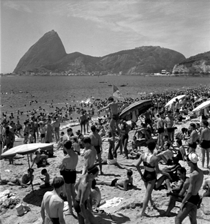
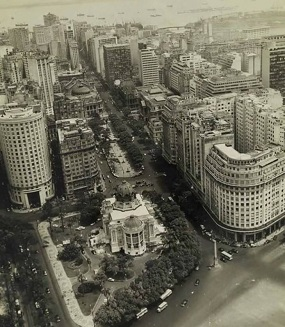

| Aterro do Flamengo |
Complexo de lazer da cidade do Rio de Janeiro. |
1940 |

|
| Flamengo |
Bairro conhecido por seu amplo parque de mesmo nome, com locais para piquenique, concertos ao ar
livre e pistas de corrida ao longo da praia. |
1940 |

|
| Copacabana |
Famosa pela praia em forma de meia-lua e um dos bairros mais animados do Rio. |
1940 |
 |
| Praia de Copacabana |
Copacabana é uma das praias mais emblemáticas do Brasil. |
1940 |
 |
| Vista Chinesa |
A Vista Chinesa é um mirante em estilo chinês localizado no bairro do Alto da Boa Vista. |
1940 |
 |
| Central do Brasil |
É uma das mais famosas estações de trens do Brasil que até o ano de 1998 se chamava Estação Dom
Pedro II. |
1940 |
 |
| Senado Federal |
Antigo Senado Federal localizado no centro do Rio de Janeiro |
1940 |
 |
| Cinelândia |
Nome popular da região do entorno da Praça Floriano, no centro da cidade do Rio de Janeiro. |
1940 |
 |
| Teatro Municipal |
O Theatro Municipal do Rio de Janeiro[1] é um dos mais importantes teatros brasileiros.
Localiza-se na Cinelândia, centro da cidade do Rio de Janeiro. |
1940 |
 |
| Beira Mar |
Localizada na orla do centro do Rio de Janeiro, foi idealizada quando Pereira Passos era
prefeito do Rio e Rodrigues Alves presidia o Brasil. |
1940 |
 |